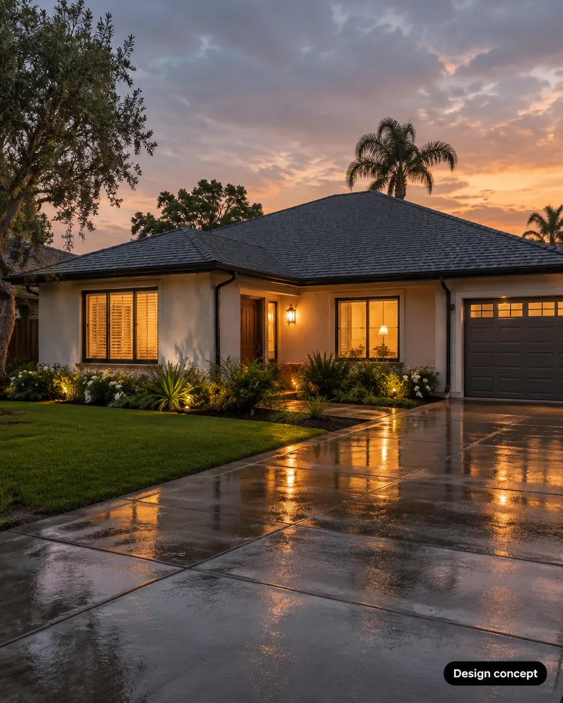
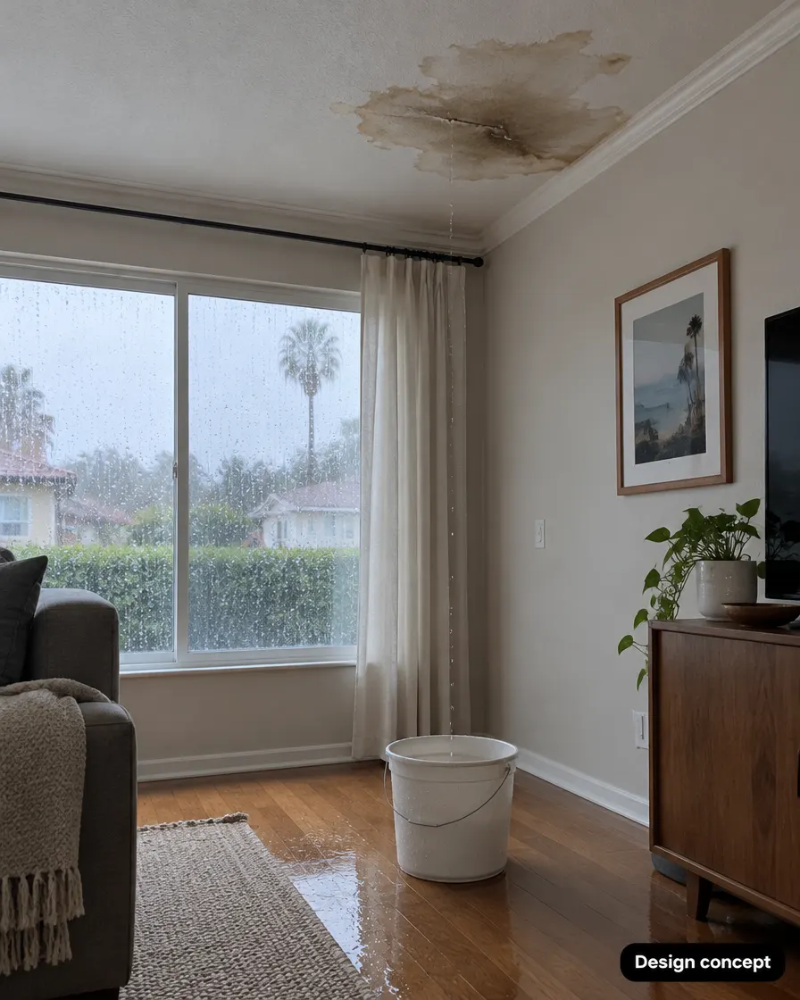
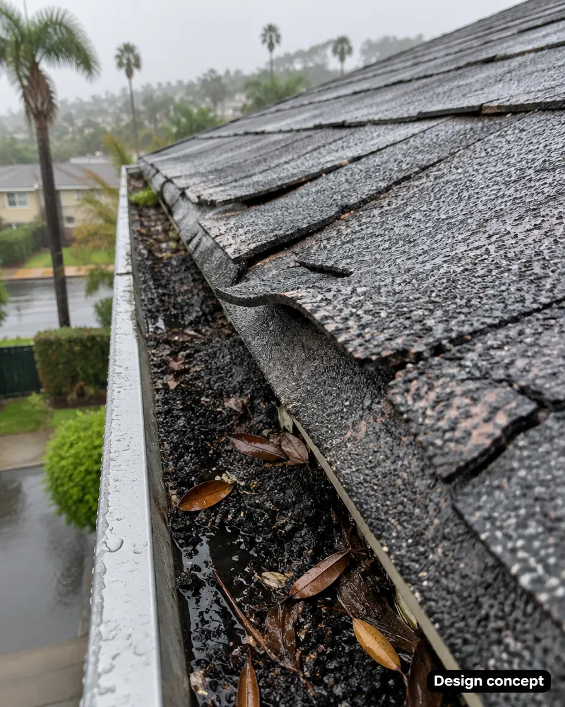
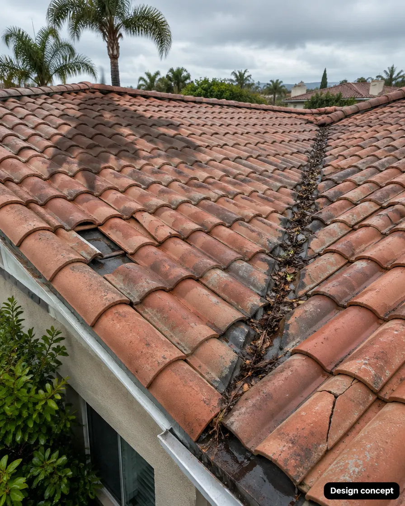
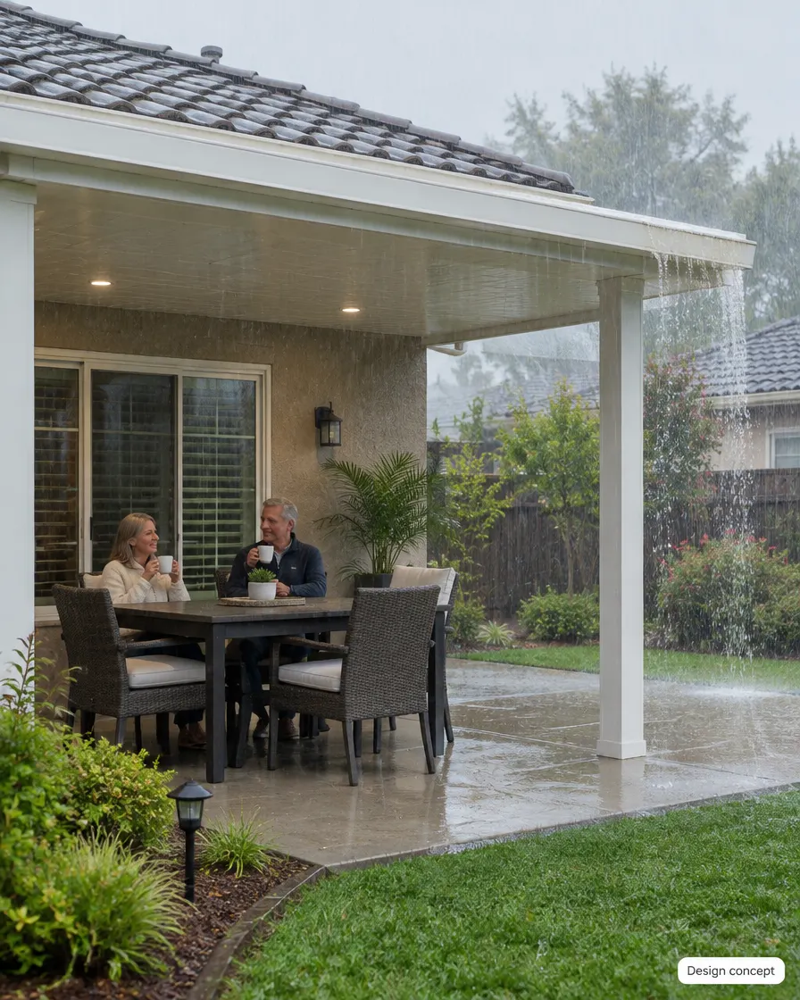

Roy comes out and checks your roof, flashing, vents, valleys and gutters. Then you get a straight answer: what needs fixing now, and what can wait. About 30–45 minutes. No cost. No obligation.

Small roof problems stay quiet in summer. The first real storm is when they turn into ceiling stains.

Even a small one. Water usually travels before it shows, so the leak is often bigger than the spot.

That grit is the shingles' protective layer washing off. When enough is gone, the next storm goes straight through.

Lifted edges and slipped tiles open a path for wind-driven rain under the roof.
Images are design concepts for illustration, not photos of client homes.
Most leaks don't start in the middle of the roof. They start where things meet, bend or drain.
Choose a slot below. You'll get a text to confirm, and you can send a photo of any spot that worries you.
About 30–45 minutes on site. Roof, flashing, vents, valleys and gutters, plus any ceiling spots inside.
Photos of what we found, what needs fixing now and what can wait. If you want work done, you get a clear written scope first.

We build backyards across LA and Orange County, and rain season starts at the roof. While we're there, we can also look at a rain-proof patio cover, so your patio stays usable all winter.
Takes a minute. You'll get a text to confirm.
Calendar not loading? Open the booking page
Yes. The check costs nothing and there's no obligation to do any work with us.
It helps. If you have a stain or spot inside, we'll want to see it and trace it back to where the water gets in.
You'll see photos of what we found and hear what needs fixing now and what can wait. If you want the work done, you get a clear written scope before anything starts. No pressure either way.
Book the first open slot and text us a photo of the spot after you book. Put a bucket under drips and move anything valuable away from the area.
Los Angeles and Orange County, including the San Fernando Valley and West LA. Not sure? Book a time and we'll confirm.
Yes. Licensed and bonded.